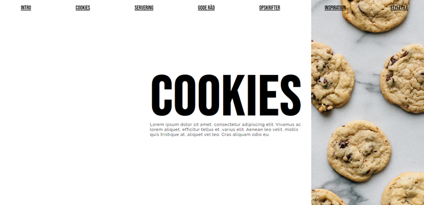

Responsiv - 02.04.04

Dette var første projekt på studiet. Vi havde over en længere periode arbejdet med vores hjemmeside og elementer til den.
Vi skulle i denne opgave lave vores hjemmeside responsiv.
Min hjemmeside handlede om Cookies, og meningen var at den skulle indeholde opskrifter og give folk inspiration til at bage.
Se min første hjemmeside her
Proces
De første udkast til min hjemmeside
Udvikling af splashbillede

Ikon og favicon